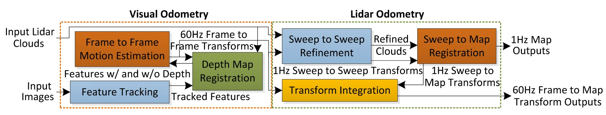
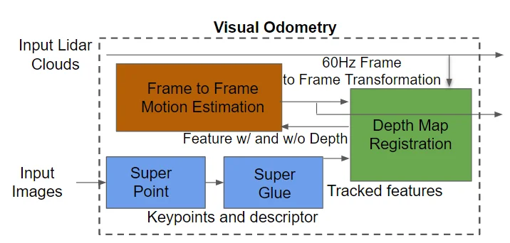
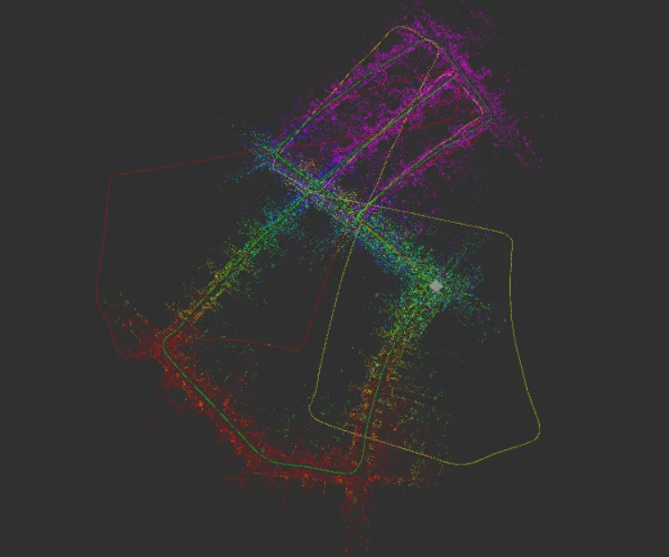

Visual-LiDAR Odometry and Mapping (VLOAM) is a state-of-the-art robotics technique for simultaneously localizing a robot and mapping its environment. It fuses a visual sensor running at high frequency (60 Hz) for feature extraction with a LiDAR sensor at low frequency (1 Hz) for drift correction via 3D point clouds.

The Challenge
Classical VLOAM relies on ShiTomasi corners and ORB descriptors for visual feature extraction and matching. These methods degrade in low-texture regions, under illumination changes, and with motion blur — common conditions in real-world robotics deployments.
The goal of Super-VLOAM was to replace these classical methods with deep learning alternatives: SuperPoint for keypoint detection and description, and SuperGlue for learned feature matching. Both models were pre-trained and converted from PyTorch to ONNX for integration into the existing C++ VLOAM codebase.
Our Work
We integrated the SuperPoint and SuperGlue networks into the visual odometry block of VLOAM — creating Super-VLOAM. Inference was performed via the ONNX runtime loaded from C++. The models ran successfully on CPU; GPU integration was partially implemented but encountered driver compatibility issues.

We evaluated Super-VLOAM on KITTI odometry sequences 04 (simple straight highway) and 05 (urban, more complex). Performance was compared against classical VLOAM and ORB-SLAM2.
Results
On sequence 04, Super-VLOAM performed comparably to classical VLOAM. On the harder sequence 05, performance was significantly worse — primarily because CPU inference was approximately 100× slower than classical feature extraction, causing frames to be skipped. Skipped frames meant larger inter-frame displacement, resulting in poor feature matching and trajectory drift.


The table above summarizes translational error (meters) and rotational error (radians) across implementations. The performance gap is directly attributable to CPU-bound inference. We expect GPU-accelerated inference to close this gap significantly, as the deep learning models themselves produce higher-quality matches in challenging conditions.
Takeaways
The integration architecture is sound — the challenge is purely compute. With GPU inference enabled (ONNX Runtime CUDA provider), the per-frame processing time should drop from ~500ms to under 10ms, making real-time operation feasible. The project demonstrated that deep learning features can be integrated into classical SLAM pipelines with manageable engineering effort.